Para restaurantes, cafés e hotéis que querem servir água de excelência — sem garrafas, sem plástico, com assinatura própria.
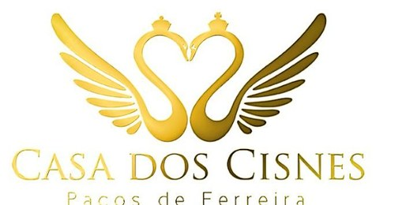
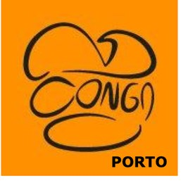
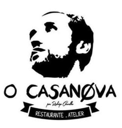
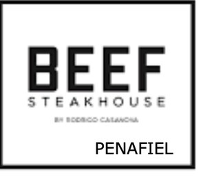
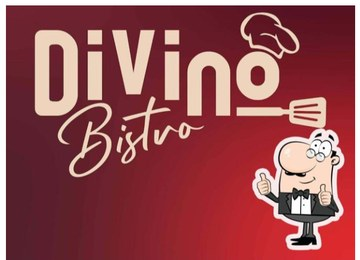
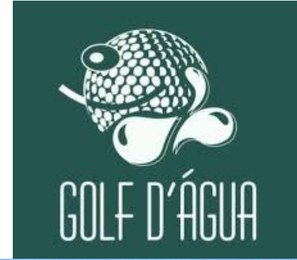
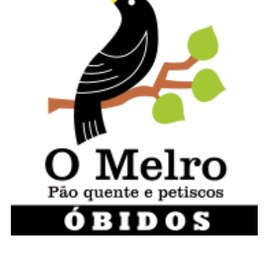
"A água deixou de ser o que se compra ao fornecedor.
Passou a ser o que a casa serve com orgulho."
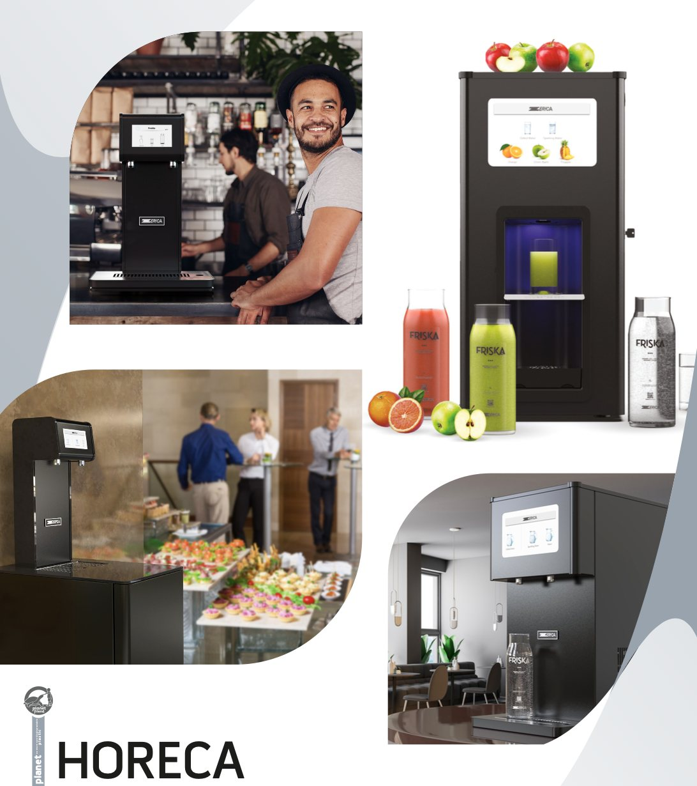
Com um equipamento Water Please, a água que chega à mesa é feita na casa: purificada na hora, fria, quente ou hidrogenada. Deixa de haver garrafas para comprar, armazenar e deitar fora.
Visitamos o teu espaço, medimos o consumo e recomendamos o equipamento certo — de bancada (sem instalação) ou integrado na cozinha.
Entregamos, instalamos e formamos a equipa num dia. O ROH2ICE não precisa de obras; o Ultra Detox liga-se sob a bancada.
Filtros, manutenção e apoio contínuo por nossa conta. Tu serves a água; nós tratamos do resto.
De bancada, sem obras. Fria, quente e hidrogenada à vista do cliente — presença premium no balcão.
Ver ficha →Sob a bancada, com torneira própria. Osmose + hidrogénio em fluxo direto de 1,6 L/min para todo o serviço.
Ver ficha →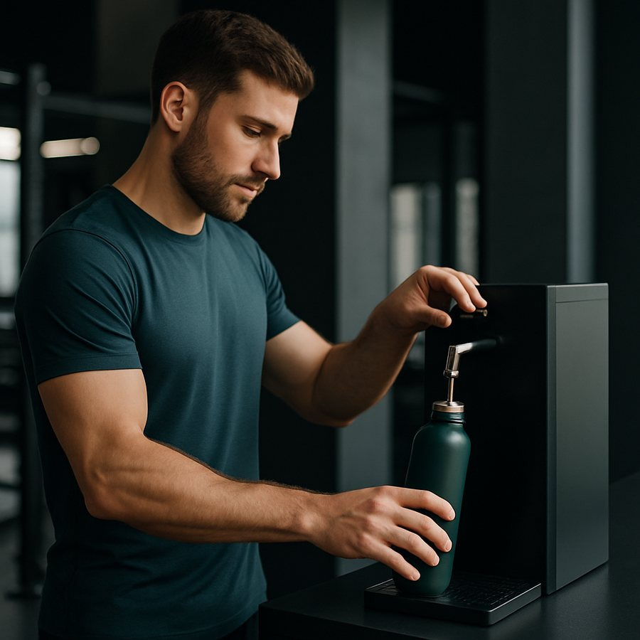
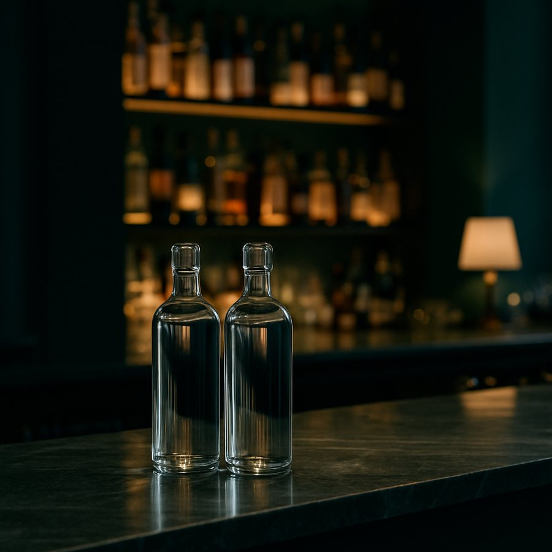
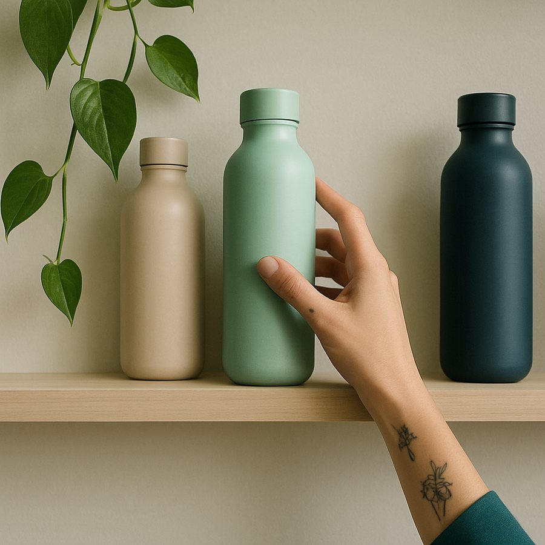
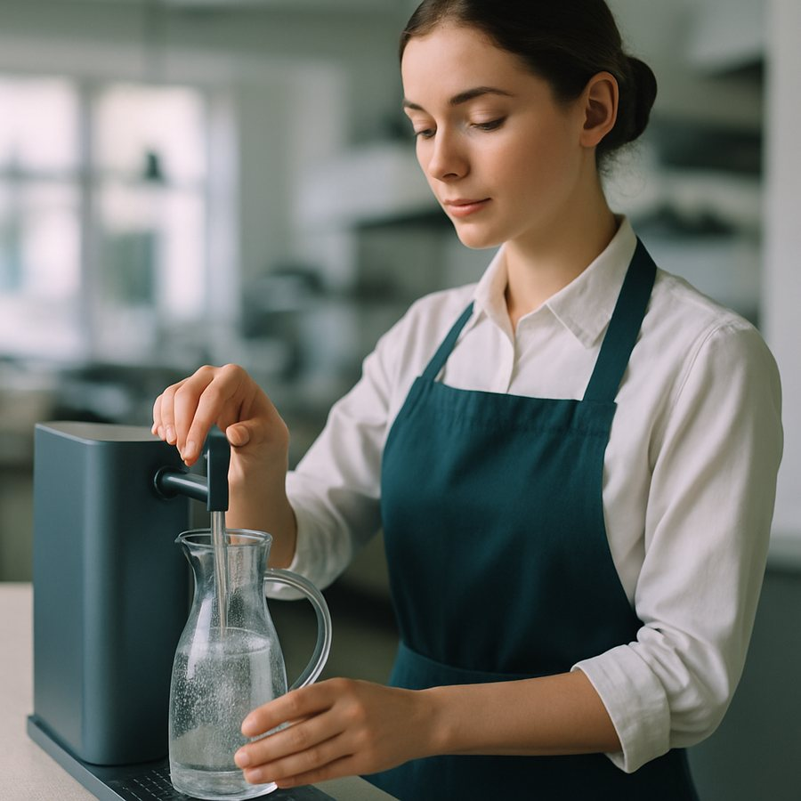
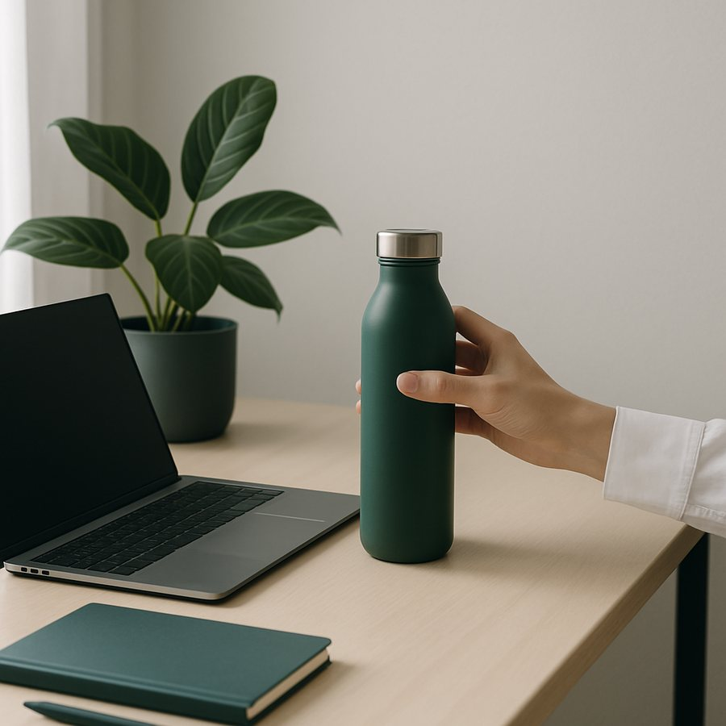
Já são muitas as casas que confiaram na Water Please e se juntaram a este movimento. Para cada uma desenhámos um serviço à medida — do balcão de café ao serviço de sala — para servir a água de mais qualidade com zero resíduos.
Junta a tua casa à mudança.
Falar connoscoDiz-nos o teu espaço e o volume de serviço. Fazemos a avaliação e a proposta sem compromisso.